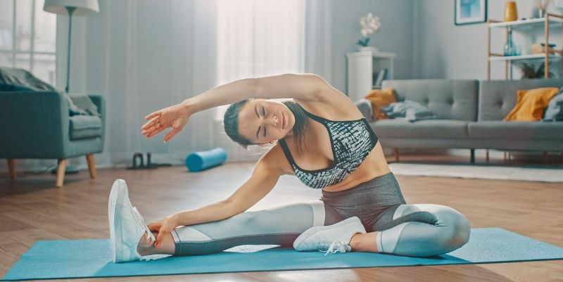

“To keep the body in good health is a duty…otherwise we shall not be able to keep the mind strong and clear.” – Buddha
The new reality has forced us to move to home and in order to keep our healthy lifestyle we must WFH - Workout From Home.
We're here to offer you different workouts, dietary tips and general information for a healthy body and mind.
Quick Diet Tip: Bananas!
Easy 5-Minute Banana Recipe
PREP 5mins TOTAL 5mins
Makes 2 kid-size smoothies or 1 large
YOU WILL NEED
1 banana
1/2 orange, peeled and quartered
1/3 cup Greek yogurt
1/4 cup water or milk (dairy or non-dairy)
1 to 2 teaspoons honey, optional
DIRECTIONS
- Roughly chop banana and orange quarters then add to a blender
- Top with yogurt and the water (or milk)
- Turn blender on and blend until creamy and smooth
- Taste then adjust with honey if needed
To build your own nutritious menu visit our Food & Diet section
Fitness Tip: Cardio
Carefully consider cardio
If getting huge is your goal, then throttle back on your cardio workouts. Chances are, you’ll be burning far too many calories. So what should you do if you still want to get in some cardio? a light jog a few days per week for 20 minutes is adequate. If you’re aiming to burn fat, of course, then focus on getting enough protein every day (usually one gram of protein per pound of ideal body weight), while still keeping your overall caloric intake low.
To build your own training program visit our Workouts section
Mental health Tip: Meditation
Progressive Relaxation
Progressive Relaxation is a basic form of meditation designed to reduce tension and
promote
feelings of peace and calm. It involves scanning all areas of the body to identify
and release
areas of stress. This is a very effective way to prevent pain associated with
clenched or spasming
muscles and can also help you go to sleep.
How to Practice:
- Sit in a comfortable meditation posture: Cross-legged on a cushion or sitting straight with both feet on the floor. Back straight, chin slightly tilted down, eyes closed or partially closed, hands held loosely in the lap
- Relax into the posture and focus on your breath for a few minutes to begin to calm your mind
- Beginning at the top of your head, focus on first tensing, then relaxing and releasing the tension from a small section of your body at a time. For example, your head, your neck, your shoulders, elbows, etc.
- Slowly go from the top of your head to the tips of your toes. You can incorporate visualizations to help with releasing tension such as imagining it flowing out of the bottom of your feet.